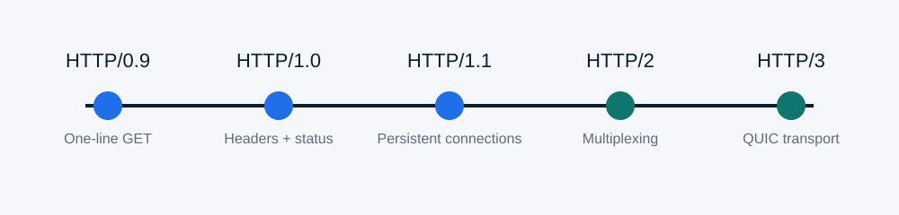

1989–1991: The early World Wide Web
Tim Berners-Lee's work at CERN connected several ideas: hypertext documents, URLs, a browser, a web server, and HTTP for exchanging resources. HTTP's original job was simple—ask for a document and receive it.
Topic Page 1
HTTP grew by preserving its basic request/response model while improving how messages are described and transported.

Tim Berners-Lee's work at CERN connected several ideas: hypertext documents, URLs, a browser, a web server, and HTTP for exchanging resources. HTTP's original job was simple—ask for a document and receive it.
The early protocol used a request such as GET /index.html. There were no standard response headers, status codes, or content types. That was enough when the Web mainly delivered simple hypertext documents.
HTTP/1.0 added protocol versions, response status codes, and headers. A response could identify its media type, allowing the Web to handle images and other formats in a predictable way.
HTTP/1.1 improved persistent connections, virtual hosting through the Host header, caching, content negotiation, range requests, and transfer handling. It became a durable foundation for commercial web growth.
HTTP/2 introduced binary framing, streams, multiplexing, and header compression. The meaning of methods, status codes, and headers stayed recognizable while the transport of messages became more efficient.
HTTP/3 maps HTTP semantics onto QUIC rather than TCP. QUIC supports independent streams, integrated security, and connection features that are useful on modern and mobile networks.
| Version | Main Improvement | Remaining Limitation |
|---|---|---|
| HTTP/0.9 | Very simple document retrieval | No headers, status codes, or rich media metadata |
| HTTP/1.0 | Headers, status codes, and content types | Connections were often short-lived and inefficient |
| HTTP/1.1 | Persistent connections, Host, stronger caching | Performance pressure when many resources share connections |
| HTTP/2 | Binary framing, multiplexing, header compression | Still relies on TCP's ordered byte stream |
| HTTP/3 | QUIC transport with independent streams and connection migration | Deployment depends on QUIC/UDP support across networks |
HTTP succeeded because newer versions did not force web developers to invent a completely different application language. The protocol kept familiar methods, status codes, fields, and resource concepts while changing how efficiently and securely messages travel.